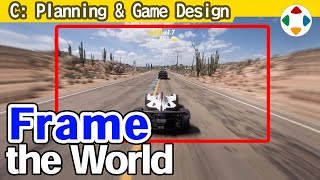
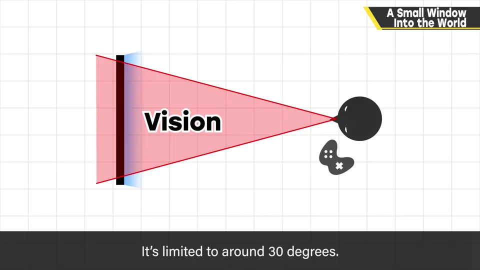
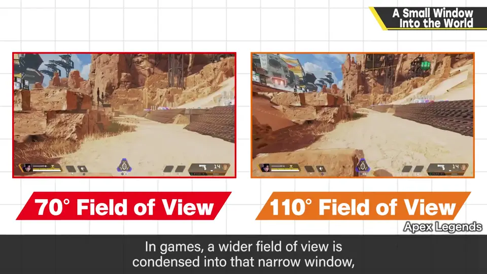
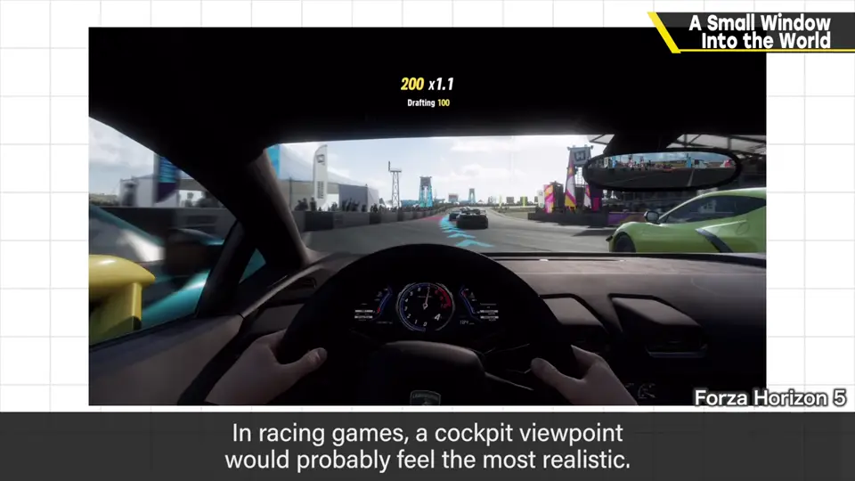
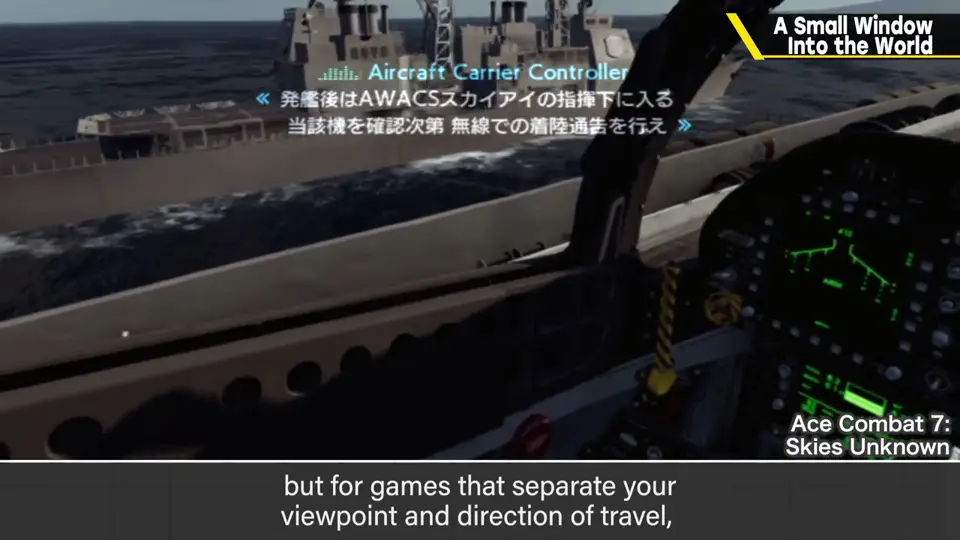
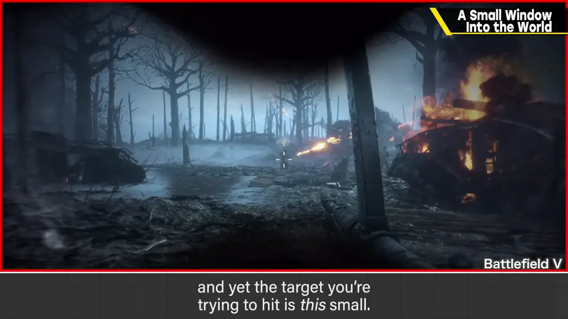
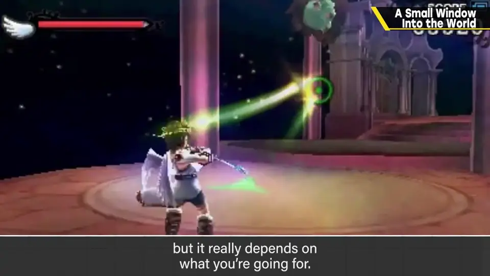

速览
赛车游戏追求逼近实拍的画面，但再怎么追求画面与模拟，也成不了真正的驾驶感——很大一个原因是显示器太小：坐着面对显示器，视野角度只有约 30 度，远不及肉眼的宽广视野；把更宽的视野压缩进屏幕又会带来矛盾。所以要时刻意识到画面被占用了多少。赛车游戏的驾驶舱视角本应最真实，但不太被选用——实际能玩的范围相对画面大幅减少。改用 VR，分辨率低会让远处模糊，而且现实中能用余光看，VR 里只能转头。即便如此，仍推荐玩一次 VR 赛车：行进方向与视线独立的载具类和 VR 极其相配。玩 FPS 时的疑问：画面这么大，却要瞄这么小的目标——要注意周围，这未必是缺点，但作为娱乐缺乏魄力。《新·光神话 帕尔提娜之镜》用比玩家大数倍的敌人来弥补，这取决于游戏方向。画面是窄窗，沉迷于游戏制作时容易忘记；边想实际用了画面哪里边布局，效果可能更好。
1. 显示器只是 30° 的窗口 0:04
赛车游戏追求有现实感的画面，几乎和实拍一样。但再怎么追求画面和模拟，也成不了真正的驾驶感。原因很多，特别大的一点是显示器太小。


坐着的人面对显示器，视野角度大概只有 30 度左右，远不及拥有宽广视野开车的真实情况。实际上会把更宽的视野压缩展开在屏幕上，但这又带来矛盾。
2. 驾驶舱视角与 VR 1:00
赛车游戏的驾驶舱视角本该最真实，但好像不太被选用。觉得难玩，是因为实际可玩的范围相对画面大大减少。


那用 VR 呢？分辨率低，远处可能只能模糊地看见——明明更想看远处，这就麻烦了。而且实际开车可以用余光瞄，VR 里只能把头转过去。
尽管有这些缺点，樱井仍推荐至少玩一次 VR 赛车：行进方向与视线相互独立的载具类游戏和 VR 极其相配。
3. FPS 的小标靶 2:01
回到正题：考虑游戏用多大的画面来玩很重要。玩 FPS 时的疑问是：画面这么大，却要瞄准这么小的目标。


也要观察周围，所以这不一定是问题，但作为娱乐，给人缺乏魄力的印象。《新·光神话 帕尔提娜之镜》把敌人做成玩家的好几倍大来弥补，不过这取决于游戏的方向。
自测题
1. 坐着面对显示器时，视野角度大约多少？
约 30 度，远小于肉眼的视野。 0:30
2. 驾驶舱视角为什么不常被选用？
实际可玩的范围相对画面大幅减少，让人觉得难玩。 1:06
3. 樱井为何推荐玩一次 VR 赛车，又提到它的哪些问题？
行进方向与视线独立的载具类与 VR 很搭；问题是分辨率低远处模糊，且只能转头不能用余光。 1:22
4. 《帕尔提娜》如何弥补 FPS 式「目标太小」的问题？
把敌人做成玩家的数倍大小。 2:24